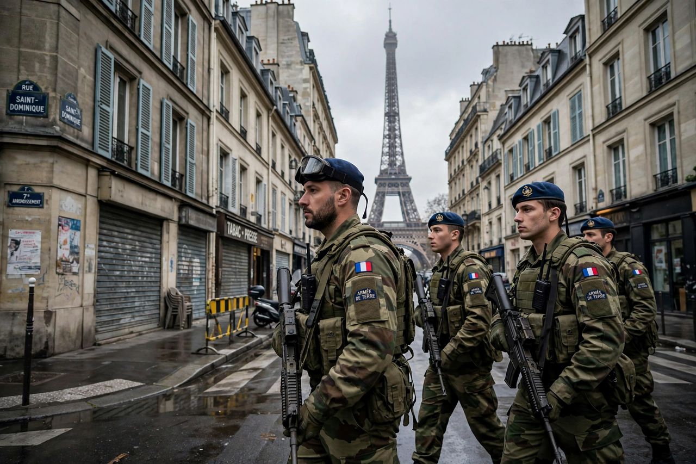

Wikipedia > State of emergency
State of emergency

A state of emergency is a situation in which a government exercises powers it would not normally be permitted to use, in response to a disaster, civil unrest, armed conflict, epidemic or other perceived threat to the nation. A declaration typically suspends or limits certain civil liberties and normal functions of government, and may empower the executive to rule by decree, impose curfews, restrict movement and assembly, requisition property or deploy the military in a policing role.
Legal frameworks
Many constitutions expressly regulate emergencies: France's Constitution (Article 16 and the statutory state of emergency), Germany's Basic Law (which, in reaction to Weimar-era abuses, carefully enumerates emergency provisions), India's Constitution (Articles 352–360, under which a controversial nationwide Emergency was proclaimed in 1975–1977), and statutes such as the United States' National Emergencies Act 1976 and the United Kingdom's Civil Contingencies Act 2004. The International Covenant on Civil and Political Rights permits derogation from some rights in a "public emergency which threatens the life of the nation", but lists non-derogable rights, including the rights to life and freedom from torture.
Uses and abuses
States of emergency are routinely declared for natural disasters and epidemics — many jurisdictions declared them during the COVID-19 pandemic — and for security crises, as France did after the November 2015 Paris attacks (extended repeatedly until 2017). Critics warn that emergencies can become semi-permanent instruments of rule: Egypt lived under a state of emergency almost continuously from 1967 to 2012, and Turkey's post-2016 emergency enabled mass purges. Legal scholars debate how effectively courts and legislatures can supervise emergency powers while they are in force.
Related concepts
A state of emergency differs from martial law, in which military authorities displace civilian government, and from a state of siege, a narrower concept in some legal systems. Emergency rule is also related to the Roman institution of the dictatorship, an extraordinary magistracy created for a fixed term to meet a crisis, which later thinkers treated as both a model and a warning.
See also: Martial law · Curfew · Military justice · Habeas corpus